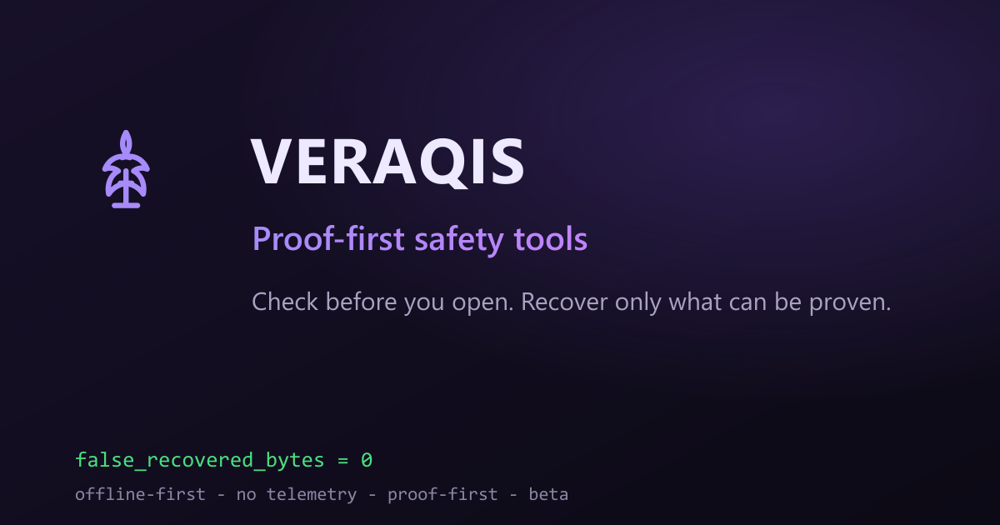

A focused password manager with no account, cloud service, subscription, telemetry or network dependency. The master password is never stored.
ColdPass is free, but no package is offered for download right now.

The encrypted vault stays on your computer. ColdPass has no cloud account, telemetry or call-home.
AES-GCM-256 protects vault contents. The previous implementation derived keys with PBKDF2-SHA-256.
Atomic saves and local backups reduce the chance that an interrupted write destroys the current vault.
These are the features of the earlier, now-withdrawn ColdPass v1.0.0 Windows package — described here for reference, not offered as a current download.
Newer development work is not advertised here until it becomes a clean, verified release.
The previous Windows package was retired. ColdPass remains a free product; its download will return only as a fresh, reviewed release.
Yes. ColdPass is free, but its Windows download is temporarily withdrawn while a clean release is rebuilt.
No. No ColdPass package is offered for download today. Please check back, or contact support to be notified.
No. The application is offline and does not include telemetry or a network-backed account.
The v1.0.0 executable was not Authenticode-signed. The SHA-256 and offline Trust Pack provided integrity evidence, but they do not replace Windows publisher reputation.